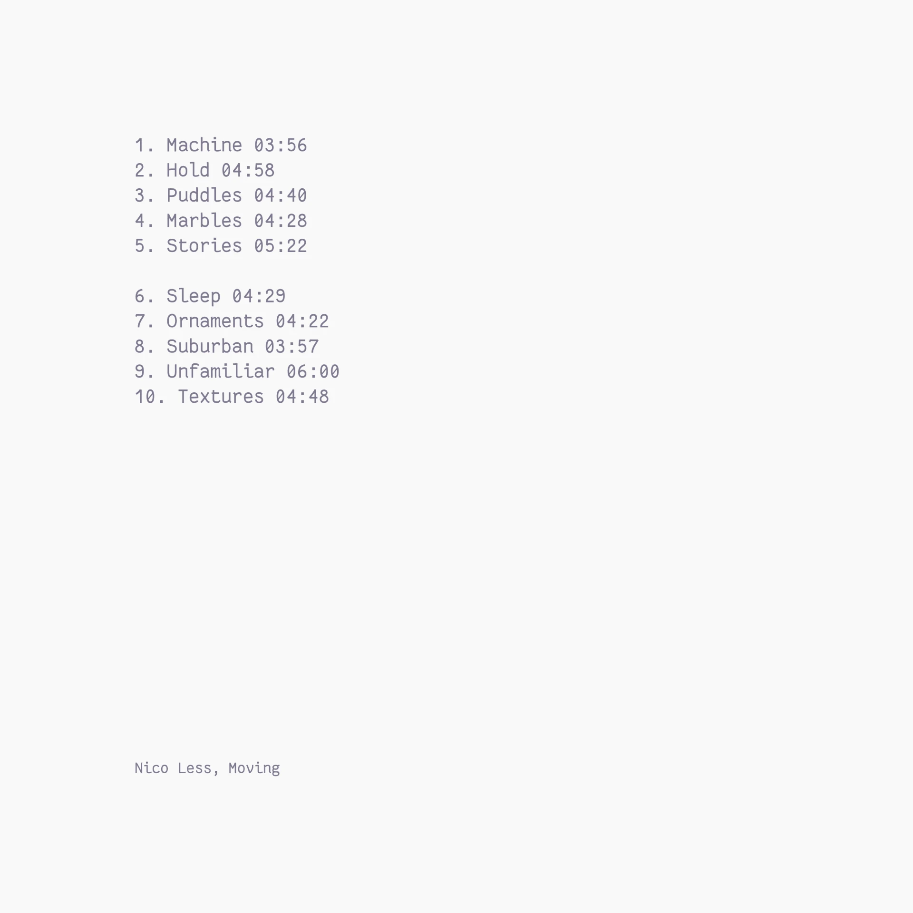

Moving is about subtle, sometimes barely there melodies. When a melody is more of an idea—something you can intuit without seeing the full picture. When the melody takes shape in your mind, because the little composer in our head has the feeling that this or that note would fit in and complete the image. But interestingly, minimalism alone is not enough. Reduction and slowing down can still feel like a finished work and therefore do not trigger this sense of completion in the mind. It is less about leaving out individual notes and more about obscuring them.